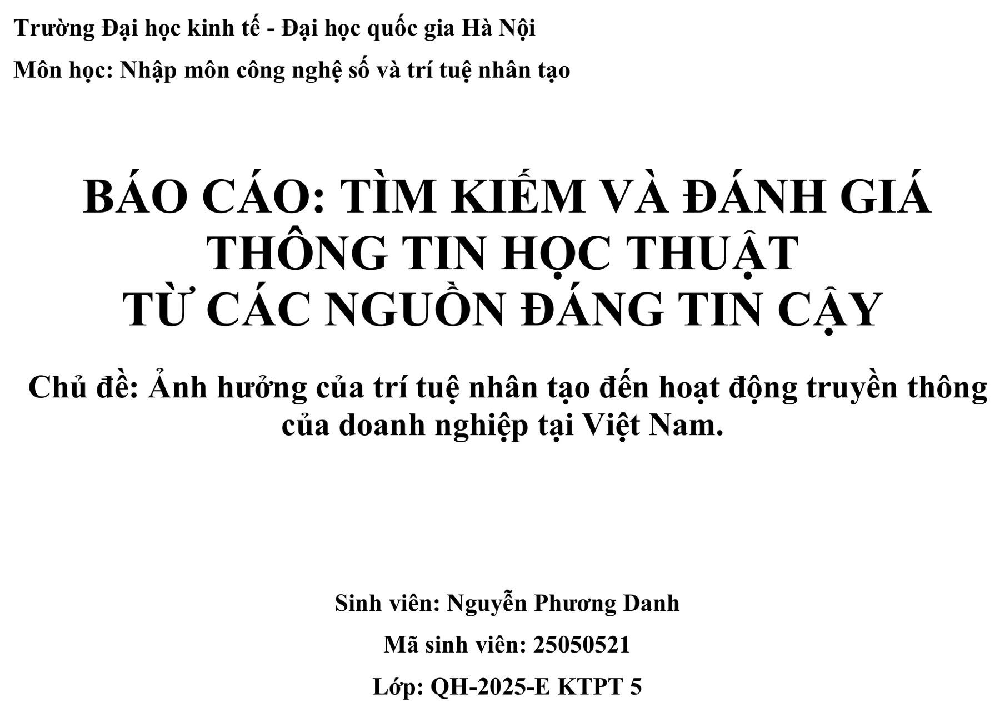
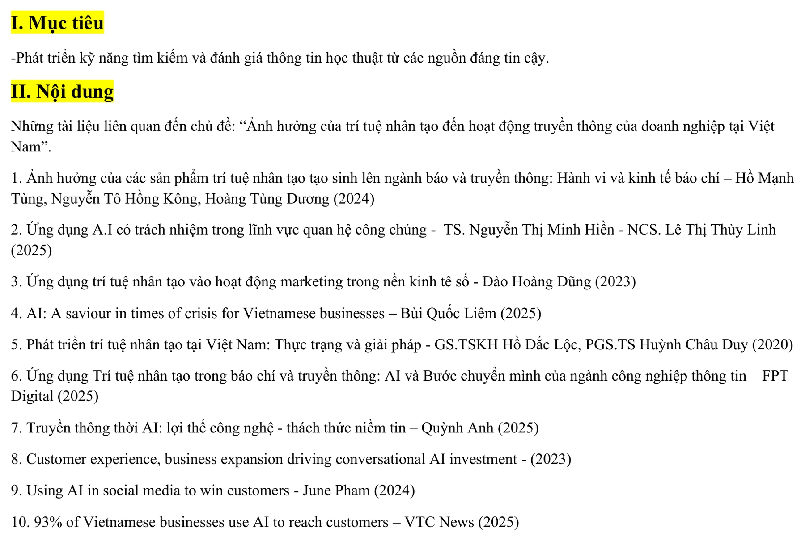
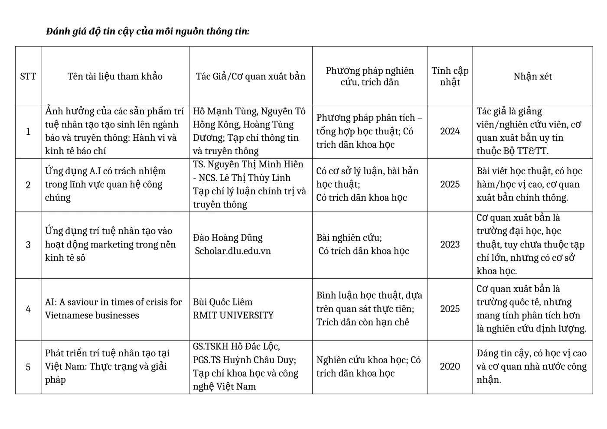
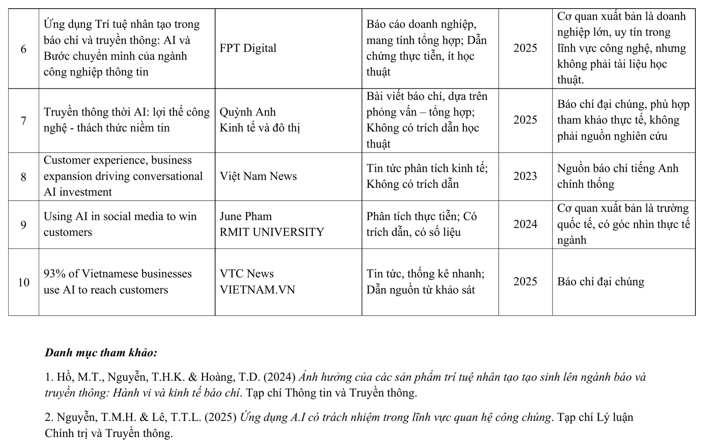
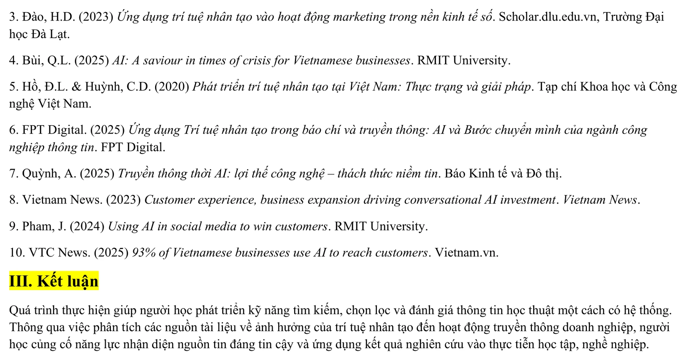

Năng lực cần hình thành
Bài tập hướng đến việc phát triển khả năng tìm kiếm, chọn lọc, đối chiếu và đánh giá thông tin từ nhiều loại nguồn khác nhau. Thông qua chủ đề ảnh hưởng của trí tuệ nhân tạo đến hoạt động truyền thông của doanh nghiệp tại Việt Nam, mình thực hành cách nhận diện mức độ tin cậy của tài liệu trước khi sử dụng trong học tập.
Mục tiêu cụ thể
- Xác định được phạm vi chủ đề và xây dựng hệ thống từ khóa phù hợp với câu hỏi cần tìm hiểu.
- Thu thập được tài liệu từ nhiều nhóm nguồn như tạp chí học thuật, trường đại học, báo cáo doanh nghiệp và báo chí chính thống.
- Đánh giá nguồn dựa trên tác giả hoặc cơ quan xuất bản, phương pháp nghiên cứu, trích dẫn, năm công bố và mức độ phù hợp.
- Phân biệt được nguồn nghiên cứu học thuật với bình luận chuyên môn, báo cáo thực tiễn và bài viết báo chí.
- Biết tổng hợp kết quả vào bảng so sánh và lập danh mục tham khảo thống nhất ở cuối báo cáo.
Các bước thực hiện
Quá trình được triển khai theo bốn giai đoạn: xác định chủ đề, thu thập tài liệu, đánh giá độ tin cậy và tổng hợp kết quả. Mỗi giai đoạn đều được kiểm tra lại để bảo đảm các nguồn được chọn có liên quan trực tiếp đến chủ đề nghiên cứu.
Xác định chủ đề và phạm vi tìm kiếm
Chủ đề được xác định là Ảnh hưởng của trí tuệ nhân tạo đến hoạt động truyền thông của doanh nghiệp tại Việt Nam. Phạm vi này kết hợp bốn thành tố chính: trí tuệ nhân tạo, truyền thông, doanh nghiệp và bối cảnh Việt Nam.
Việc xác định rõ phạm vi giúp hạn chế các kết quả quá rộng, chẳng hạn tài liệu chỉ nói về AI nói chung hoặc chỉ tập trung vào kỹ thuật công nghệ mà không liên quan đến truyền thông doanh nghiệp.
Xây dựng từ khóa và truy vấn tìm kiếm
Mình sử dụng cả từ khóa tiếng Việt và tiếng Anh như trí tuệ nhân tạo, AI, truyền thông doanh nghiệp, marketing, public relations, social media và Vietnamese businesses.
Các từ khóa được kết hợp theo nhiều cách để mở rộng phạm vi tìm kiếm nhưng vẫn giữ được sự liên quan đến chủ đề. Kết quả sau đó được sàng lọc dựa trên tiêu đề, tóm tắt, cơ quan xuất bản và nội dung chính của tài liệu.
Thu thập 10 nguồn tài liệu đa dạng
Danh sách cuối cùng gồm 10 tài liệu được công bố trong giai đoạn 2020-2025. Các nguồn đến từ tạp chí chuyên ngành, trường đại học, cơ quan khoa học, doanh nghiệp công nghệ và báo chí Việt Nam.
Sự đa dạng này giúp bài tập vừa có nền tảng học thuật, vừa phản ánh được các ví dụ và xu hướng thực tế trong hoạt động truyền thông, marketing, quan hệ công chúng và chăm sóc khách hàng.
Đánh giá độ tin cậy theo tiêu chí
Với mỗi tài liệu, mình ghi lại tên tài liệu, tác giả hoặc cơ quan xuất bản, phương pháp nghiên cứu, tình trạng trích dẫn, năm công bố và nhận xét về mức độ tin cậy.
Nguồn học thuật được ưu tiên khi có tác giả rõ ràng, cơ quan xuất bản uy tín, phương pháp minh bạch và trích dẫn khoa học. Nguồn báo chí hoặc báo cáo doanh nghiệp được sử dụng chủ yếu để bổ sung bối cảnh thực tế, không thay thế hoàn toàn tài liệu nghiên cứu.
Tổng hợp, đối chiếu và lập danh mục tham khảo
Kết quả đánh giá được trình bày trong bảng so sánh 10 nguồn, giúp quan sát rõ sự khác nhau về loại tài liệu, tính cập nhật và mức độ tin cậy.
Sau cùng, các tài liệu được tổng hợp thành danh mục tham khảo để bảo đảm nguồn thông tin có thể được kiểm tra và sử dụng lại trong các bài viết hoặc nghiên cứu tiếp theo.
Minh chứng từ quá trình thực hiện
Các hình ảnh dưới đây được chuyển trực tiếp từ báo cáo Bài 2, thể hiện đầy đủ chủ đề nghiên cứu, danh sách 10 nguồn, bảng đánh giá độ tin cậy và danh mục tham khảo cuối báo cáo.
Nhấn vào từng ảnh để xem kích thước lớn.





Phân loại các nguồn đã thu thập
- Nhóm nguồn học thuật gồm bài đăng trên tạp chí chuyên ngành, công trình từ trường đại học và cơ quan khoa học.
- Nhóm bình luận hoặc phân tích chuyên môn cung cấp góc nhìn thực tiễn, nhưng mức độ trích dẫn và phương pháp có thể hạn chế hơn nghiên cứu học thuật.
- Báo cáo doanh nghiệp giúp phản ánh xu hướng ứng dụng AI trong ngành, song cần được sử dụng cùng các nguồn độc lập để tránh phụ thuộc vào góc nhìn tổ chức.
- Báo chí chính thống phù hợp để cập nhật ví dụ, số liệu và sự kiện, nhưng không nên được xem là nguồn nghiên cứu chính nếu thiếu phương pháp và trích dẫn.
Giá trị của bảng đánh giá
Bảng đánh giá giúp mình không lựa chọn tài liệu chỉ dựa vào tiêu đề hoặc vị trí xuất hiện trên kết quả tìm kiếm. Mỗi nguồn được xem xét trong mối quan hệ giữa tác giả, cơ quan xuất bản, phương pháp, tính cập nhật và mục đích sử dụng.
Nhờ đó, các nguồn học thuật có thể được dùng để xây dựng lập luận, trong khi nguồn báo chí và doanh nghiệp được sử dụng để bổ sung bối cảnh và ví dụ thực tiễn.
Những gì đạt được
Sau khi hoàn thành bài tập, mình đã xây dựng được một quy trình tìm kiếm và đánh giá nguồn có hệ thống, thay vì sử dụng ngay những kết quả xuất hiện đầu tiên trên công cụ tìm kiếm.
- Tổng hợp được 10 tài liệu liên quan trực tiếp đến chủ đề AI và truyền thông doanh nghiệp tại Việt Nam.
- Nhận diện được sự khác nhau giữa nghiên cứu học thuật, bình luận chuyên môn, báo cáo doanh nghiệp và bài viết báo chí.
- Biết ưu tiên nguồn có tác giả rõ ràng, cơ quan xuất bản uy tín, phương pháp minh bạch và trích dẫn khoa học.
- Hiểu rằng tính mới không phải tiêu chí duy nhất; một nguồn cũ hơn vẫn có giá trị nếu có nền tảng nghiên cứu vững chắc.
- Biết sử dụng nguồn báo chí và doanh nghiệp như dữ liệu bổ trợ, đồng thời kiểm tra chéo với các nguồn học thuật độc lập.
- Hoàn thiện bảng đánh giá theo cùng một hệ tiêu chí, giúp việc so sánh giữa các tài liệu trở nên rõ ràng hơn.
- Xây dựng danh mục tham khảo để bảo đảm tính minh bạch và khả năng truy xuất nguồn thông tin.
Nhận xét chung về bộ tài liệu
Bộ tài liệu có sự kết hợp giữa nguồn học thuật và nguồn thực tiễn. Các bài nghiên cứu và tạp chí chuyên ngành tạo nền tảng lý luận, còn báo cáo doanh nghiệp, trường đại học và báo chí giúp minh họa cách AI đang được ứng dụng trong truyền thông, marketing, quan hệ công chúng và tương tác với khách hàng.
Phân tích và hướng nâng cấp
Điểm làm tốt
Báo cáo đã lựa chọn được nhiều loại nguồn và đánh giá chúng theo các tiêu chí thống nhất. Việc ghi rõ tác giả, cơ quan xuất bản, phương pháp, năm công bố và nhận xét giúp quá trình lựa chọn tài liệu trở nên minh bạch hơn.
Điểm còn hạn chế
- Một số nguồn chủ yếu mang tính bình luận, tổng hợp hoặc báo chí, chưa có phương pháp nghiên cứu được trình bày đầy đủ.
- Bộ tài liệu mới tập trung vào 10 nguồn, vì vậy chưa phản ánh hết các hướng nghiên cứu về AI trong truyền thông doanh nghiệp.
- Việc đánh giá hiện chủ yếu dựa trên thông tin thể hiện trong tài liệu; chưa kiểm tra sâu số lượt trích dẫn hoặc mức độ ảnh hưởng học thuật.
- Các nguồn tiếng Anh còn ít, làm hạn chế khả năng so sánh giữa bối cảnh Việt Nam và xu hướng quốc tế.
Bộ truy vấn nâng cấp nếu thực hiện lại
Ở lần thực hiện tiếp theo, mình sẽ kết hợp từ khóa với các toán tử tìm kiếm để thu hẹp kết quả, ưu tiên tài liệu có tiêu đề phù hợp và tăng khả năng tìm được báo cáo hoặc nghiên cứu toàn văn.
| Toán tử | Ví dụ truy vấn | Mục đích |
|---|---|---|
| Dấu ngoặc kép | "trí tuệ nhân tạo" "truyền thông doanh nghiệp" |
Tìm chính xác các cụm từ trọng tâm. |
| site: | site:edu.vn AI truyền thông doanh nghiệp |
Giới hạn kết quả trong website của trường đại học. |
| filetype: | filetype:pdf AI marketing Việt Nam |
Tìm báo cáo, luận văn hoặc bài nghiên cứu dạng PDF. |
| intitle: | intitle:"trí tuệ nhân tạo" truyền thông |
Ưu tiên tài liệu có chủ đề xuất hiện ngay trong tiêu đề. |
| Dấu trừ | AI truyền thông doanh nghiệp -tuyển dụng |
Loại bỏ các nội dung không liên quan đến phạm vi nghiên cứu. |
| Kết hợp tiếng Anh | "artificial intelligence" "corporate communication" Vietnam |
Mở rộng nguồn quốc tế có liên quan đến bối cảnh Việt Nam. |
Hướng cải thiện quy trình đánh giá
Ngoài các tiêu chí đã sử dụng, mình sẽ kiểm tra thêm thông tin về tạp chí, số lượt trích dẫn, dữ liệu gốc, xung đột lợi ích và sự nhất quán giữa kết luận với phương pháp nghiên cứu. Với các số liệu quan trọng, mình sẽ tìm ít nhất hai nguồn độc lập để đối chiếu trước khi sử dụng.
Sản phẩm đầy đủ
Bản PDF bên dưới được chuyển trực tiếp từ báo cáo đã hoàn thành. Nếu trình duyệt không hiển thị khung xem trước, hãy dùng nút mở PDF.